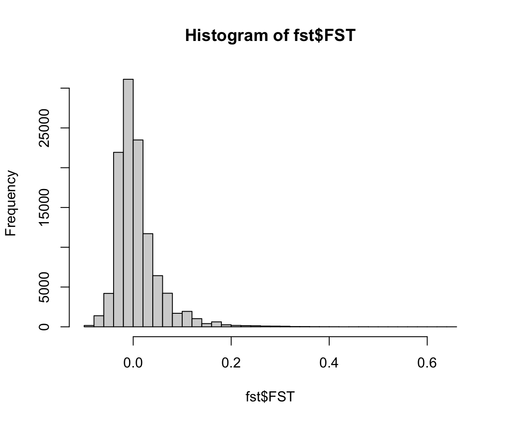
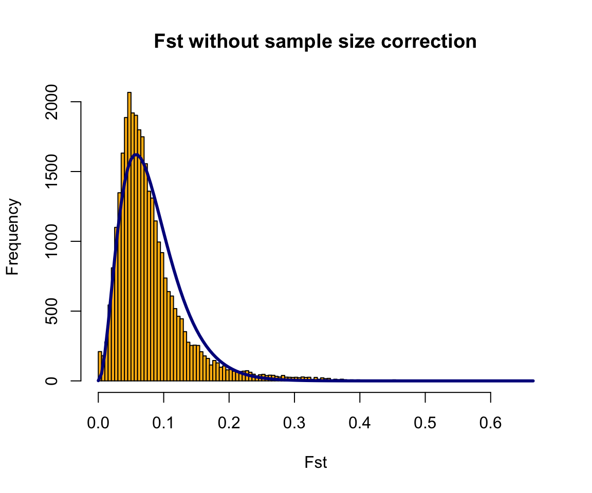
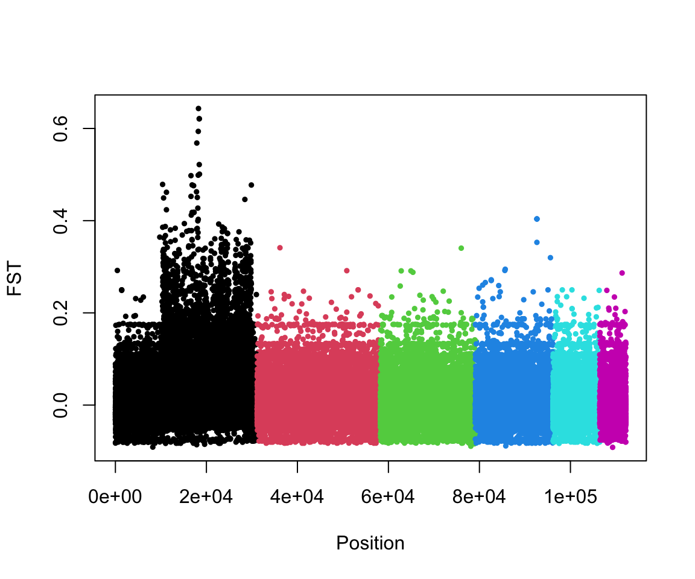

10 Week 9: Fst outlier analysis and chunky quails
The lecture for this week focused on Fst and outlier analysis can be found hereWeek 9 Slides
Last week we used PCA to take a broad look at whether populations were genetically distinct. This week we will look at SNPs that differentiate between populations that may represent signals of selection. If you want to learn morea bout how different methods for detecting signatures of selection I recommend visiting this page on the marineomics website: https://marineomics.github.io/POP_10_Signatures_of_Selection.html
We will use data from the following paper focused on genomic variation in common quails:
We will get more into what the data focuses on later in the lesson, but a few findings from the study is that the quails with and without the inversion differ in their throat coloration, weight (& fat reserves), wing shape and migratory behavior.
We will download the data and take a first look in bash and then we will do analysis and generate the plots in RStudio.
10.1 Main Objectives:
- Learn how to identify particular SNPs that are driving patterns of divergence between populations
- Connect what we learned in previous lessons using PCAs and Structure Plots and how these methods differ from today’s outlier analyses
- Practice keeping scripts organized to ensure reproducibility
10.2 Download the data
We first need to download the data.
10.2.1 On Farm
Open a terminal and navigate to your directory. Then use wget to download the data folder. We’ll then use the tar command to un-compress it.
10.2.2 On Your Own Computer
Similar to last week you need to navigate to the class github page where all of the data is stored https://github.com/mlarmstrong/IntroGenomics_Data Click on week9.zip and then after it takes you to a new page click the three dots in the top right and hit download.
10.3 Unzip the Folder & Look at Data
Regardless of download method, unzip the week9 directory and navigate inside. What do you see?
The SNP data is in a vcf file, just like for previous weeks. Take a look at the head of the metadata file. What columns do you see?
10.4 Downloading R Packages
Open R Studio on your desktop or on Farm. The first thing we need to do is download a few different packages.
Today we will be using the SeqArray and SNPRelate packages to read our data. You used these last week but you were on your desktop, so you will need to install these packages again for Farm. You will need to use Biocmanager to install both of these packages, so run if (!require("BiocManager", quietly = TRUE)).
For the outlier analysis, we will use a package called OutFLANK which also needs the package qvalue to run (we call this a ‘dependency’).
10.5 R hygiene
Now that you are getting more comfortable coding in R, it’s a good time to talk about how to make your scripts clean, readable, and reusable. The first and likely most important piece of advice is to ALWAYS do lots of commenting with # so when you come back to your code you know what you did and why
It’s good practice to put three main pieces of information at the top of your code. Your name (for when you share code), the last modified date, and the purpose of the code. Looks like this:
After that, I like to have all the libraries that will be needed for the code loaded:
## Warning: package 'SeqArray' was built under R version 4.4.1## Loading required package: gdsfmt## Warning: package 'gdsfmt' was built under R version 4.4.1## Warning: package 'SNPRelate' was built under R version 4.4.1## Loading required package: qvalueFinally, I like to make objects for all the files that I will use. Again, this is so that if I want to come back to the code later and run the same analysis on different files, it is obvious what I need to change rather than being buried in the code:
#setwd("/group/rbaygrp/eve198-genomics/rachael")
vcf.path="ChunkyQuails.vcf.gz"
meta.path="ChunkyQuails_meta.csv"Make sure your working directory is set up to the folder your data is stored in for week 9. Now that our script is organized, we are ready to use the data!
10.6 Finding outliers using OutFLANK
We will read in the vcf file just like we did last week when we did PCA. Give it a try on your own!
Class Exercise 1
Using info from Week 8, read in your data!
Q1. Convert your vcf file to a gds file called “ChunkyQuails.gds”. Then read make a gds object called ‘genofile’. How many samples do you have?
Q2. Read in your metadata file to an object named ‘meta’ (hint: read.csv()). Take a look at the different columns. “Loc1” is the breeding location. How many unique breeding locations are represented?
10.7 Pulling SNP data from the gds file
Later, we will want information on the location of each SNP in the genome. We can pull information from the gds file like this:
chromosomes <- read.gdsn(index.gdsn(genofile, "chromosome"))
positions <- read.gdsn(index.gdsn(genofile, "position"))
variant.id <- read.gdsn(index.gdsn(genofile, "variant.id"))Then put everything together in a single dataframe like this:
We also want the matrix of SNP genotypes. We can pull this from the gds object using the snpgdsGetGeno() command:
## Genotype matrix: 80 samples X 112195 SNPsTake a look at this matrix. Here I’m just looking at the head of the first 10 columns because the matrix is large!
## [,1] [,2] [,3] [,4] [,5] [,6] [,7] [,8] [,9] [,10]
## [1,] 1 2 2 2 2 2 2 2 2 2
## [2,] 1 2 2 2 2 2 2 2 2 2
## [3,] 2 2 2 2 2 2 2 1 2 2
## [4,] 2 2 2 2 2 2 2 2 2 2
## [5,] 1 2 2 2 2 2 2 2 2 2
## [6,] 2 2 2 1 2 2 2 2 2 2We have four different values: 0,1,2, and NA. These represent the reference homozygote, heterozygote, alternate homozygote, and missing data respectively. The program that we want to use, OUTFLank requires a ‘9’ instead of ‘NA’ for missing data. We can do the replacement like this:
Take a look at the head of the dataframe again. Did it work?
10.8 Calculating Fst and identifying outliers
What are the dimensions of G? How do we interpret that?
Now we can caluclate Fst for each SNP. We’re going to calculate differentiation among locations (the Loc1 column in your metadata).
WAIT! First we need to determine whether our metadata is in the same order as our genotype matrix.
Class Exercise 2
Is your metadata in the same order as your genotype matrix?
Q1. Get the sample names from your gds object (hint: how did you extract chromosome and position from gds? There is also information in ‘sample.id’)
Q2. Determine whether the sample IDs you extracted from the gds are in the same order as in the metadata file (hint: you did this last week too!)
Phew - NOW we can calculate Fst!

Once we’ve calculated Fst between the two populations for each SNP individually, we want to determine whether some SNPs are outliers - that is, more differentiated than we would expect. OutFLANK does this by fitting a Chi-Squared distribution to the data and looking to see if the tails of the Chi-Squared distribution have more SNPs than expected:
OF <- OutFLANK(fst,LeftTrimFraction=0.01,RightTrimFraction=0.01,
Hmin=0.05,NumberOfSamples=9,qthreshold=0.01)OutFLANKResultsPlotter(OF,withOutliers=T,
NoCorr=T,Hmin=0.1,binwidth=0.005,
Zoom=F,RightZoomFraction=0.05,titletext=NULL)
It’s a little hard to tell from these plots, but there may be some SNPs with high Fst even where the distribution predicts there should be none. To find these SNPs, we ask which SNPs are statistical outliers?
P1 <- pOutlierFinderChiSqNoCorr(fst,Fstbar=OF$FSTNoCorrbar,
dfInferred=OF$dfInferred,qthreshold=0.05,Hmin=0.1)
outliers <- P1$OutlierFlag==TRUE
table(outliers)## outliers
## FALSE TRUE
## 31775 285Now we can make a manhattan plot! There are lots of packages to make very beautiful manhattan plots and even highlight particular genes of interest. Here we will just use base R. First, take a look at the dataframe that has information on Fst and outliers:
## LocusName He FST T1 T2 FSTNoCorr
## 1 1 0.2997116 -0.0159898161 -2.407181e-03 0.15054464 0.04630126
## 9 9 0.3408941 -0.0049619118 -8.528996e-04 0.17188930 0.07862600
## 16 16 0.4946028 0.0465988082 1.168634e-02 0.25078625 0.11595269
## 19 19 0.2448980 -0.0812639538 -9.952130e-03 0.12246672 0.02331883
## 25 25 0.2087950 0.0009384393 9.887713e-05 0.10536337 0.08458284
## 26 26 0.1778913 0.0353452459 3.182881e-03 0.09005117 0.10384667
## T1NoCorr T2NoCorr meanAlleleFreq pvalues pvaluesRightTail qvalues
## 1 0.006982284 0.15080116 0.18354430 0.46013402 0.7699330 0.9999994
## 9 0.013545112 0.17227268 0.21794872 0.89656240 0.4482812 0.9999994
## 16 0.029138558 0.25129696 0.44805195 0.38400724 0.1920036 0.9999994
## 19 0.002864526 0.12284177 0.14285714 0.09330932 0.9533453 0.9999994
## 25 0.008934381 0.10562877 0.11842105 0.79343073 0.3967154 0.9999994
## 26 0.009370817 0.09023704 0.09868421 0.51556265 0.2577813 0.9999994
## OutlierFlag
## 1 FALSE
## 9 FALSE
## 16 FALSE
## 19 FALSE
## 25 FALSE
## 26 FALSEWe are missing chromosome information, which we want to make a beautiful manhattan plot that is colored by chromosome. Remember how we made the snp.pos dataframe earlier? Basically we want to merge P1 and snp.pos.
Class Exercise 3
Merge two dataframes based on one column
- Q1. Merge the P1 and snp.pos dataframes based on the LocusName column. There are many ways to do this. Two of my favorites are ‘merge()’ or ‘left_join()’ which is part of dplyr package. Use the help file for one of them and try to merge the two dataframes into a single called “merged.P1”
##
## Attaching package: 'dplyr'## The following objects are masked from 'package:stats':
##
## filter, lag## The following objects are masked from 'package:base':
##
## intersect, setdiff, setequal, unionYay! Now that we have a merged dataframe we can make a manhattan plot:

What do you notice about this plot? Can you think of a possible explanation for this result?
10.9 Group Work Activity: PCA & Outflank
This week’s activity will combine skills you learned last week and this week using the quail dataset we familiarized ourselved with during class:
Rerun OUTFlank, but this time use the “Karyotype_cluster” cluster instead of geographic populations. This column tells you what inversion genotype a particular quail has. Compare this plot to the plot we made in class - why are there similarities and differences?
Create a PCA of the quail data. You can choose to color by geography or by karyotype (or get fancy with different shapes and colors!) Interpret the figure you make in one to two sentences
Copy the lines in your script used to answer these questions into your canvas submission. Be sure to include the answers for question 1, interpretations for the figures and the two figures you made as well.
10.10 Key Points
- Standard organization of R scripts increases reproducibility
- Fst outliers can be used to find genomic signals of local adaptation
Class Exercise Solutions
Class Exercises: Solutions
Exercise 1
- Convert your vcf file to a gds file called “ChunkyQuails.gds”. Then read make a gds object called ‘genofile’.
## Wed Aug 27 13:46:42 2025
## Variant Call Format (VCF) Import:
## file:
## ChunkyQuails.vcf.gz (16.8M)
## file format: VCFv4.0
## genome reference: <unknown>
## # of sets of chromosomes (ploidy): 2
## # of samples: 80
## genotype field: GT
## genotype storage: bit2
## compression method: LZMA_RA
## # of samples: 80
## INFO: NS,DP,AF
## FORMAT: AD,DP,GQ,PL
## Output:
## ChunkyQuails.gds
## [Progress Info: ChunkyQuails.gds.progress]
## Parsing 'ChunkyQuails.vcf.gz':
## + genotype/data { Bit2 2x80x112195 LZMA_ra(14.1%), 612.4K }
## Digests:
## sample.id [md5: 7491c6b4eaee9ba3078493a0d2907177]
## variant.id [md5: 59d8acf06ab4f39a290c4fc4a5e1016a]
## position [md5: 2536048a36b118218ef1c95e788a198f]
## chromosome [md5: a73e4a30c0efeea7a9842dde9cbc96f8]
## allele [md5: 9a28d049bceced835db2dfb86ed8cdfb]
## genotype [md5: 1d122df67114b974b6d70b98c3553153]
## phase [md5: e09164064bd27eb2cd5fbbe89cb2bd59]
## annotation/id [md5: a21597987108313d8c18eed6ac3cd45e]
## annotation/qual [md5: cc3abe146f504492261c55294bb7af3e]
## annotation/filter [md5: 50f223a513d64b2fed133f812af41f1f]
## annotation/info/NS [md5: 66886a2dd285c7b02a4d723ba71d3597]
## annotation/info/DP [md5: 66886a2dd285c7b02a4d723ba71d3597]
## annotation/info/AF [md5: 6e6dcb39f4b68c5a7dc6ad670c6ff366]
## annotation/format/AD [md5: 93096ea89bda017c7fd98c0875c519ef]
## annotation/format/DP [md5: 219e34546fd54cfbdaf77f852b8c9240]
## annotation/format/GQ [md5: fcbed5e7153bf05cf0718c7a549ba14f]
## annotation/format/PL [md5: 316019d9afcd850edd107263716149cc]
## Done.
## Wed Aug 27 13:47:27 2025
## Optimize the access efficiency ...
## Clean up the fragments of GDS file:
## open the file 'ChunkyQuails.gds' (15.8M)
## # of fragments: 1017
## save to 'ChunkyQuails.gds.tmp'
## rename 'ChunkyQuails.gds.tmp' (15.8M, reduced: 11.1K)
## # of fragments: 74
## Wed Aug 27 13:47:27 2025
- Read in your metadata file to an object named ‘meta’. How many unique breeding locations are represented?
##
## Canary Islands CE Spain Italy Madeira Morocco
## 18 5 5 10 13
## NE Spain NW Spain S Portugal S Spain
## 6 6 10 7## [1] 9Exercise 2
- Get the sample names from your gds object
- Determine whether the sample IDs you extracted from the gds are in the same order as in the metadata file
## [1] TRUEExercise 3
- Merge the P1 and snp.pos dataframes based on the LocusName column.